Interfacing to Analogue I/O with C#

Introduction#
C is a high-levelled structured programming language which is often used for writing microcontroller applications. This section looks at how I/O operations are performed on analogue inputs.

Topics discussed#
In this section we will be looking at how we can read analogue signals into a microcontroller using an analogue to digital converter. The lecture starts by introducing analogue signals and the fundamental principals of an ADC before moving to look at the ADC contained on the Atmel ATmega328 microcontroller, focussing on the key registers and how to use them. The section concludes with an example program for the Atmel ATmega328 microcontroller which reads the voltage from a potentiometer and turns on some LEDs based on the voltage.
Contents#
What are analogue signals?#
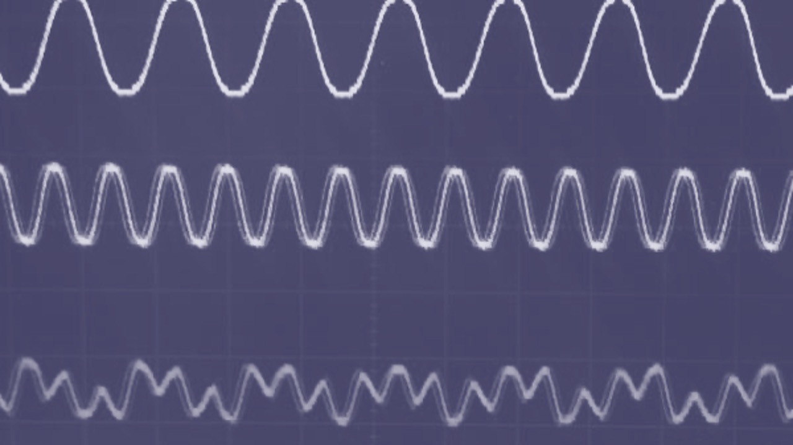
This image by Unknown Author CC-BY-SA-NC
Analogue signals#
Analogue signals are those that are both continuous in time and continuous in amplitude i.e. they are continuous signals.
In the real world, most measurable parameters are actually analogue. They include such signals as temperature, humidity, light, sound, etc.
An analogue sensor for measuring light intensity is shown in Fig. 65 along with a calibration graph that would be typically supplied in the data sheet for such a sensor..
{kind=link}
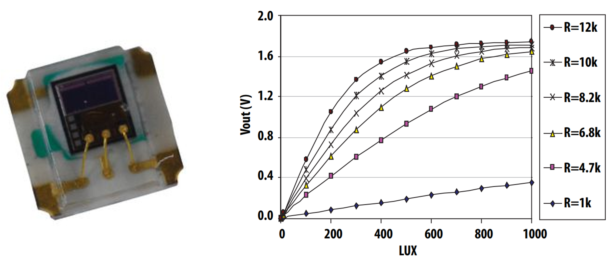
Fig. 65 A photograph of a light sensor and its calibration data#
Sampling and quantization#
Since microcontrollers can only handle 0s and 1s (digital signals) we need a way of converting analogue signals to digital signals. This is done using an analogue-to-digital converter or ADC.
An ADC converts a continuous-time and continuous-amplitude analogue signal to a discrete-time and discrete-amplitude digital signal through a process called sampling and quantization illustrated in Fig. 66..
{kind=link}
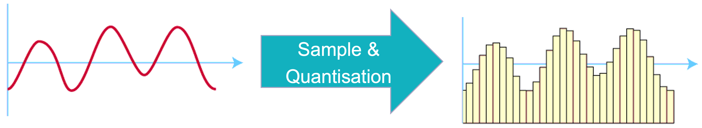
Fig. 66 Sampling and quantization of and an analogue signal#
ADC Principles#
An analogue signal is continuous in time and amplitude and to convert it to a digital signal it is necessary to periodically sample the analogue signal. The rate at which the signal is sampled is referred to as the sampling rate.
Each time the signal is sampled the analogue value must be represented in one of several discrete bins (digital values). The number of discrete bins available is called the resolution.
Both, the sampling rate and the conversion resolution need to be sufficiently high to create an accurate digital reconstruction of the analogue signal.
ADC Sampling Rate#
The Nyquist–Shannon sampling theorem implies that to get an accurate reproduction of the original signal, the sampling rate must be higher than twice the highest frequency of the signal. Lower than this and the reproduced signal will be distorted, and data lost.
Note: This will be covered in more detail in EG-247 Digital Signal Processing in year. 2
Example.#
Consider the sine wave governed by the equation \(x(t) = sin(t)\). the period is \(2\pi\) (approx. 6.3 seconds) so the frequency is 0.16 Hz (Fig. 67).
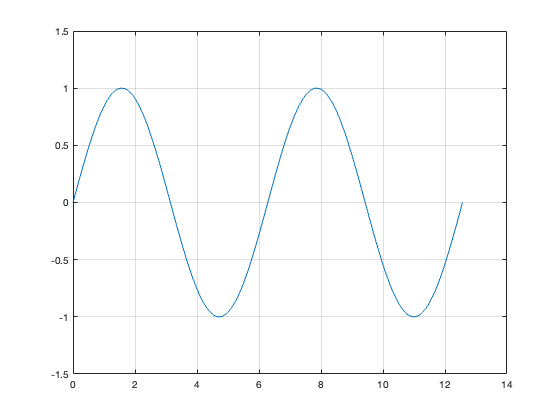
Fig. 67 Analogue signal \(x(t) = sin(t)\) - a sine wave.#
`
If we sample this at 0.5 Hz (once every 2 seconds), which is over 3 times the original frequency we get the orange trace Fig. 68. From this it would be enough to accurately recreate the blue trace.
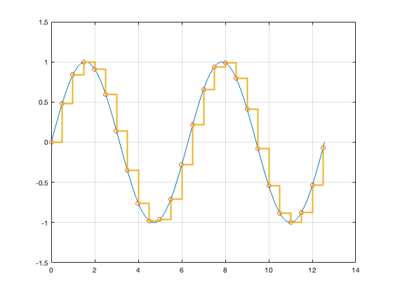
Fig. 68 Sine wave \(x(t) = sin(t)\) sampled at 0.5 Hz.#
ADC Resolution#
As well as the sampling rate, the resolution of the converter is crucial to getting an accurate representation of the input signal. The resolution indicates the number of discrete values that can be used over the total range of analogue values.
A 2 bit ADC#
As an example a 2-bit ADC has \(2^2 = 4\) quantization levels (Fig. 69)..
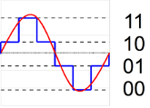
Fig. 69 Illustration of the resolution of a 2 bit ADC#
A bit t ADC has \(2^3 = 8\) quantization levels ({numref}`wk6:fig:3bi).#
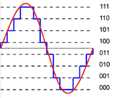
Fig. 70 Illustration of the resolution of a 3 bit ADC#
Resolution of a 3-bit ADC#
To calculate the resolution of an ADC we use (4)[1].
The graph in Fig. 71 shows the values (bins) that are available for a three bit ADC.
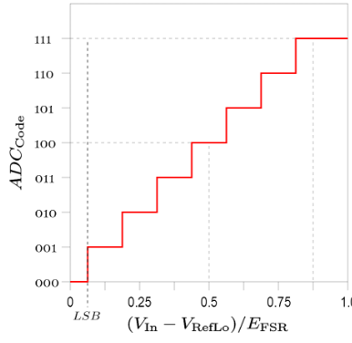
Fig. 71 The resolution of a 3 bit ADC#
Examples#
Let’s say that we have a 10-bit ADC and the reference voltage is 5V.
If our input is 2.2V the the digital output will be:
Notice in the first example when the resolution is 10-bit the answer consists of 10 bits not 12 or 16.
Let’s say that we have a 6-bit ADC and the reference voltage is 3.3.
If our input is 1V the the digital output will be:
Illustrating the sampling theorem#
Violation of the sampling theorem#
Consider the signal with frequency \(F_c = 1\)Hz, sampling frequency of \(F_s = 1\)Hz, and resolution = 3 bits. The sampled signal is illustrated in Fig. 72. Nyquist-Shannon sampling theorem has clearly been violated and the original signal cannot be reconstructed from the sampled signal.
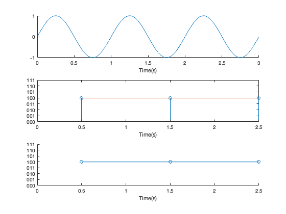
Fig. 72 Violation of the sampling thereom: signal cannot be reconstructed from sampled signal#
Sampling at twice the signal frequency#
Consider the signal with frequency \(F_c = 1\)Hz, sampling frequency of \(F_s = 2\)Hz (the so-called Nyquist frequency), and resolution = 3 bits. The sampled signal is illustrated in Fig. 73. The reconstructed signal is on the border of acceptable. In practice, we need to sample at a higher frequency than \(F_s = 2F_c\).
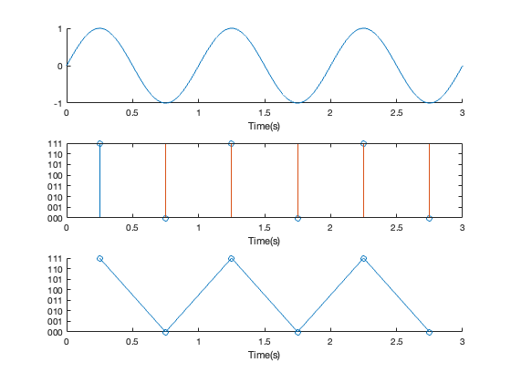
Fig. 73 Signal sampled at the Nyquist frequency and 3-bit resolution. Signal is just about reconstructable from the sampled data.#
Illustrating sampling and quantization#
Sampling at five times the signal frequency#
Consider the signal with frequency \(F_c = 1\)Hz, sampling frequency of \(F_s = 5\)Hz, and resolution = 3 bits. The sampled signal is illustrated in Fig. 74. The reconstructed signal (in the bottom trace) is starting to look like a sine wave.
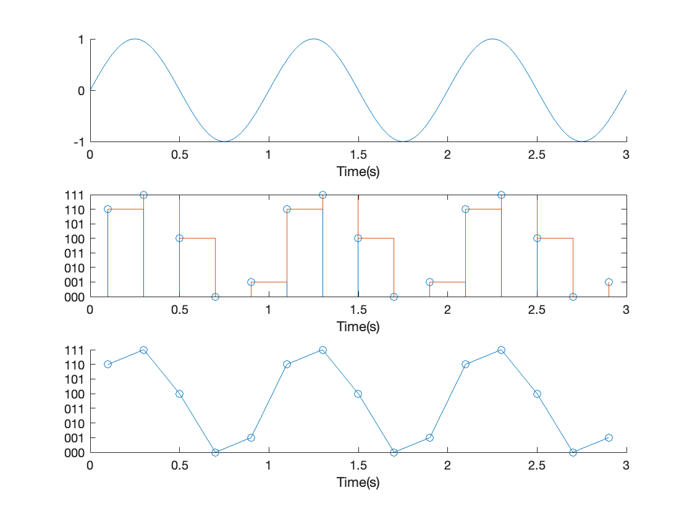
Fig. 74 Signal sampled at the \(Fs = 5 Fc\) and 3-bit resolution.#
Sampling at ten times the signal frequency#
Consider the signal with frequency \(F_c = 1\)Hz, sampling frequency of \(F_s = 10\)Hz, and resolution = 3 bits. The sampled signal is illustrated in Fig. 75. The reconstructed signal now starting to look like a sine wave. In general, the faster the sampling frequency compared to the frequency of the analogue signal, the better the approximation.
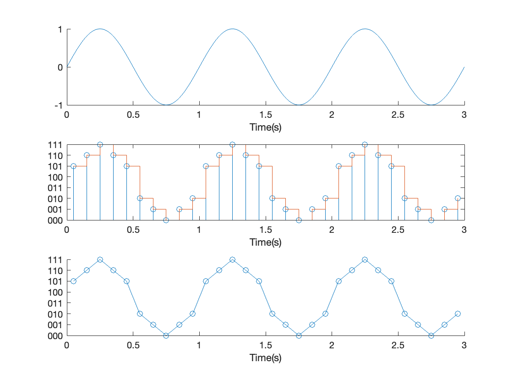
Fig. 75 Signal sampled at the \(Fs = 10 Fc\) and 3-bit resolution.#
ADC Architecture#
{kind=link}
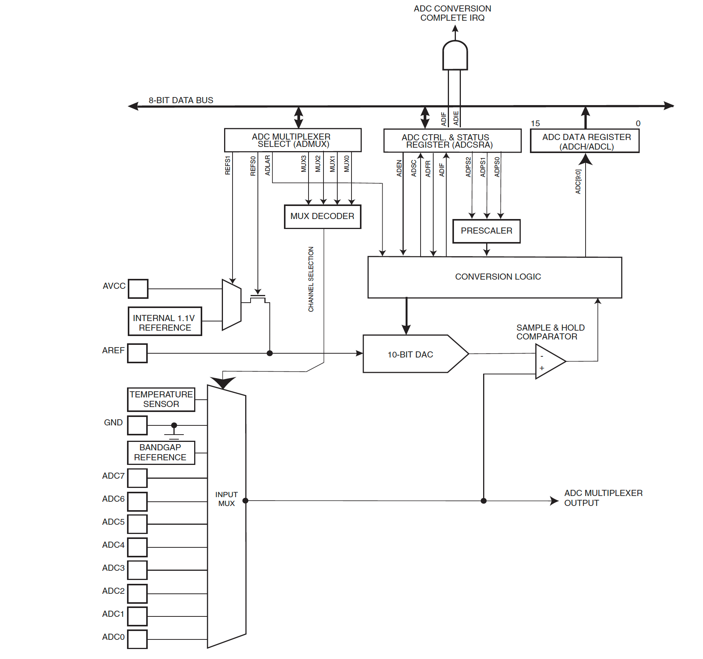
Fig. 76 The architecture of the ADC system in the Atmel ATmega328 Processor (source ATmega48A-PA-88A-PA-168A-PA-328-P-DS-DS40002061B, Page 247)#
ADC Components#
The architecture of the Atmel ATmega328 is shown in Fig. 76. It contains the following major components:
Multiplexer[2]
Voltage Reference
Digital to Analogue Converted (DAC)
Sample and Hold Circuit
Control and Result Registers
The most important components are described in more detail in the following subsections.
Architectures#
There are several achitectures for ADCs summarized as:
Sigma-Delta (\(\Sigma-\Delta\))
Successive Approximation Register (SAR)
Pipelined
Flash
Each has their own advantages and disadvantages in terms of price, conversion speed, noise and complexity as summarized in Fig. 77.
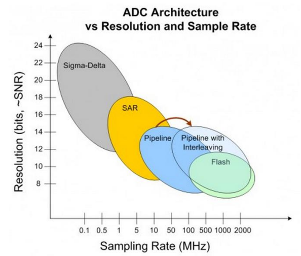
Fig. 77 ADC Architecture vs Resolution and Sample Rate (Source calstate.edu)#
Most general-purpose microcontrollers contain SAR-based architecture ADCs.
SAR based ADC Architecture#
Successive-approximation-register (SAR) ADCs are the most common architecture for medium-to-high-resolution applications with sample rates under 5 megasamples per second.
The SAR converter is essentially a binary search algorithm which compares the input to the ADC with the output from a digital to analogue converter (DAC) until the input matches the DAC output and the device is able to output the corresponding binary value.
While the internal circuitry of the ADC may be running at several megahertz, the ADC sample rate is a fraction of that number due to the multiple step successive-approximation algorithm needed to convert the measured input to a binary number.
The SAR converter is at the heart of the ATmega328 microcontroller and is highlighted in Fig. 78.
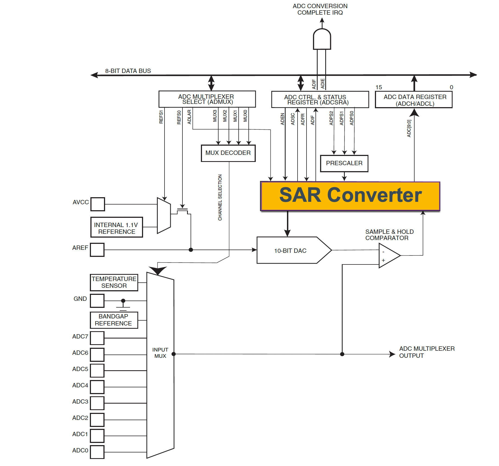
Fig. 78 Schematic diagram of the Atmel ATMega328 ADC system with the SAR highlighted.#
SAR based ADC Operation#
Consider the schemeatic diagram shown in Fig. 79.
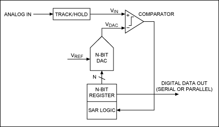
Fig. 79 Schematic diagram of the hardware used to achieve SAR conversion (image source: Analog Devices[3]).#
The analogue input signal is held by a track/hold circuit and fed as \(V_\mathrm{IN}\) into a comparator.
To implement the binary search algorithm, the \(N\)-bit register is first set to mid-scale (that is the MSB is set to 1 and all other bits set to 0) so that the voltage at \(V_\mathrm{DAC} = V_\mathrm{REF}/2\).
A comparison is then performed to determine if \(V_\mathrm{IN} \le V_\mathrm{DAC}\).
If \(V_\mathrm{IN} > V_\mathrm{DAC}\), the comparator output will be logic high (or 1), and the MSB of the \(N\)-bit register remains at 1.
If \(V_\mathrm{IN} < V_\mathrm{DAC}\), the comparator output is a logic low (0) and the MSB of the \(N\)-register is cleared to logic 0.
The SAR control logic then moves to the next bit along[4], forces that bit high, and repeats the comparison. The sequence continues all the way down to the LSB (bit 0).
Once the input has been compared with the full \(N\)-bit register the conversion is complete and the \(N\)-bit digital word is sent to the ADC output register.
4-bit SAR based ADC Example#
Consider Fig. 80:
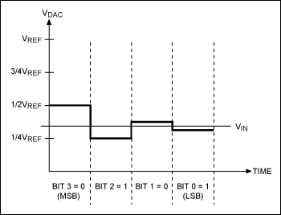
Fig. 80 Example of the successive approximation method in action: a 4 bit ADC converting a signal for which \(V_\mathrm{IN}\) is in “bin” 5.#
Bit 3 is set high (compare signal is \(1000_2\))
\(V_\mathrm{IN} < V_\mathrm{DAC}\) so the comparator output is low (0).
Bit 3 is set low and bit 2 is set high (compare signal is now \(0100_2\)).
\(V_\mathrm{IN} > V_\mathrm{DAC}\) so the comparator output is high (1).
Bit 2 remains high and now Bit 1 is set high too (compare signal is \(0110_2\)).
\(V_\mathrm{IN} < V_\mathrm{DAC}\) so the comparator output is low (0).
Bit 1 is set low and bit 0 is set high (compare signal is \(0101_2\))
\(V_\mathrm{IN} > V_\mathrm{DAC}\) so the comparator output is high (1).
The final output of the conversion is \(0101_2 = 5/16 V_\mathrm{REF} = 0.3125 V_\mathrm{REF}\).
The Atmel ATmega328 Analog-digital-converter#

Image source: This Photo by Unknown Author is licensed under CC BY-NC
The Atmel ATMega328 ADC#
The Atmel ATMega328 features a 10-bit successive approximation ADC.
The ADC is connected to an 8-channel Analog Multiplexer which allows eight single-ended voltage inputs (referenced to GND) constructed from the pins of Port C.
Technical specifications#
The ADC provides:
10-bit Resolution
13 - 260μs Conversion Time
Up to 76.9kSPS[5] (Up to 15kSPS at Maximum Resolution)
9 Multiplexed Single Ended Input Channels
Hardware registers used#
ADMUX- ADC Multiplexer Selection Register.ADCSRA- ADC Status and Control Register A.ADCSRB- ADC Status and Control Register B.ADCLandADCH- The ADC Output Registers.DIDR0- Digital Input Disable Register 0.
These registers are described in the following sections.
ADMUX – ADC Multiplexer Selection#
The ADMUX is an 8-bit register arranged as shown in Fig. 81.
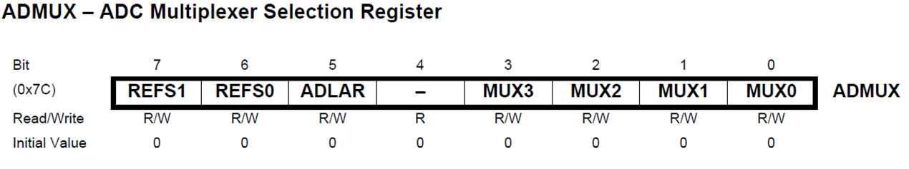
Fig. 81 The ACD Multplexer Selection Register ADMUX (Source: Atmel Documentation).#
Reference selection bits#
Bits 7 and 6 -REFS1 and REFS0 select the reference voltage for the ADC[6].
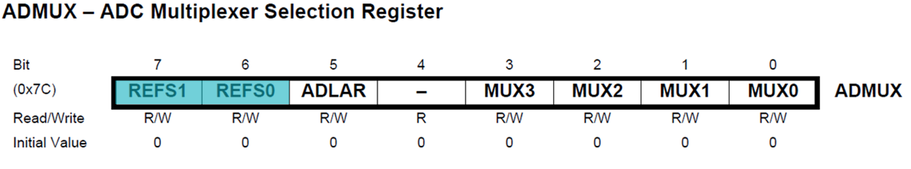
The settings for the reference selection bits are tabulated in Table 9.
REFS1 |
REFS0 |
Voltage Reference Selection |
|---|---|---|
0 |
0 |
AREF, Internal \(V_\mathrm{REF}\) turned off. |
0 |
1 |
AVCC with external capacitor on AREF. |
1 |
0 |
Reserved |
1 |
1 |
Internal 1.1V reference with external capacitor at AREF pin. |
Bit 5 – ADLAR: ADC Left Adjust Result#
The ADLAR bit (bit 5) affects the presentation of the ADC conversion result in the ADC Data Register. We write 1 to ADLAR to left adjust the result. Otherwise, the result is right adjusted.
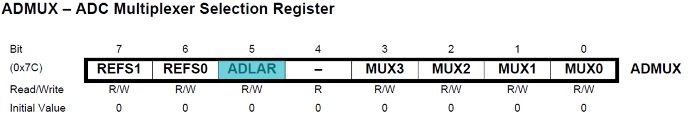
We will revisit this in a couple of slides when we discuss the results registers.
Bits 3:0 – MUX[3:0]: Analog Channel Selection Bits#
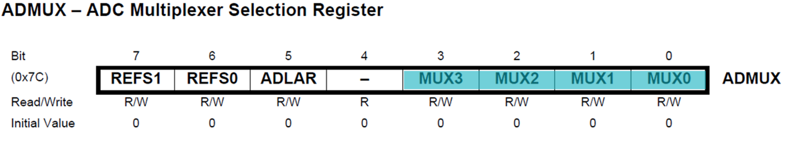
The value of these bits selects which analogue inputs are connected to the ADC (see Fig. 82 and Table 10).
{kind=link}
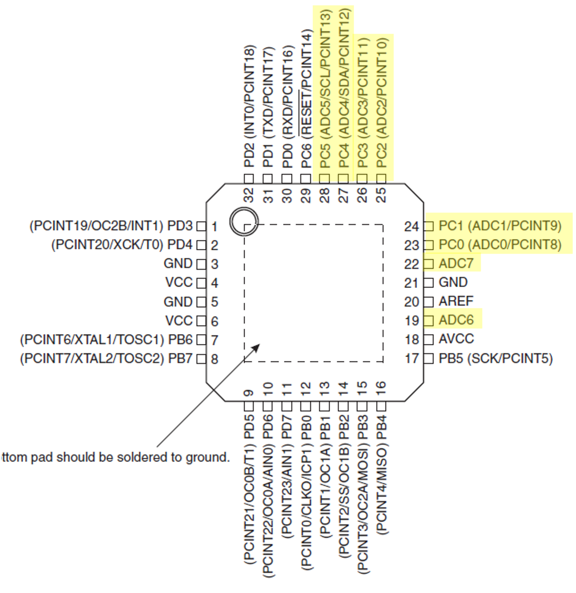
Fig. 82 The pins on the Atmel ATmega328 that may be multiplexed to act as ADC inputs.#
MUX3:0 |
Input Selected |
|---|---|
\(0000\) |
ADC0 |
\(0001\) |
ADC1 |
\(0010\) |
ADC2 |
\(0011\) |
ADC3 |
\(0100\) |
ADC4 |
\(0101\) |
ADC5 |
\(0110\) |
ADC6 - Not used on the Arduino nano board |
\(0111\) |
ADC7 - Not used on the Arduino nano board |
\(1000\) |
ADC8 - Used for internal temperature sensor. |
\(1001\) |
Reserved |
\(1010\) |
Reserved |
\(1011\) |
Reserved |
\(1100\) |
Reserved |
\(1101\) |
Reserved |
\(1110\) |
1.1V (\(V_\mathrm{BG}\)) |
\(1111\) |
GND |
ADCSRA - ADC Control and Status Register A#
Bit 7 - ADEN: ADC Enable#
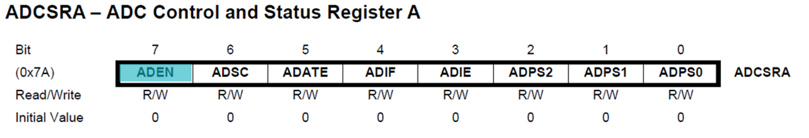
Writing 1 to bit 7 of the ADCSRA register enables the ADC. Writing 0 to this bit turns the ADC off.
Bit 6 - ADSC: ADC Start Conversion#
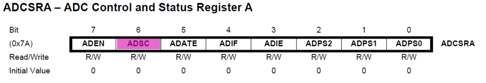
In Single Conversion Mode, writing 1 to bit 6 of the ADCSRA register starts the conversion.
In Free Running Mode, writing 1 to this bit starts the first conversion.
Bit 5 - ADATE: ADC Start Conversion#
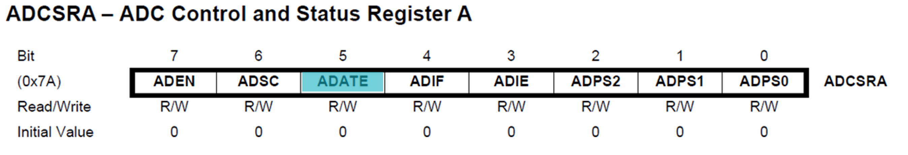
When 1 is written to bit 5 of the ADCSRA register, the ADC will start a conversion on a positive edge of the selected trigger signal[7]
Bit 4 - ADIF: ADC Interrupt Flag#
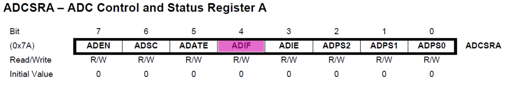
This bit is set when an ADC conversion completes, and the data registers are updated. The ADC Conversion Complete Interrupt is executed if the ADIE bit and the I-bit in the status register are set.
Bit 3 - ADIE: ADC Interrupt Enable#
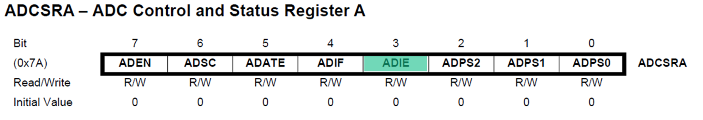
Writing 1 to bit30 of the ADCSRA register, when the I-bit in the status register is set, activates the ADC Conversion Complete Interrupt
Bits 2-0 - ADPS[2:0]: ADC Interrupt Enable#
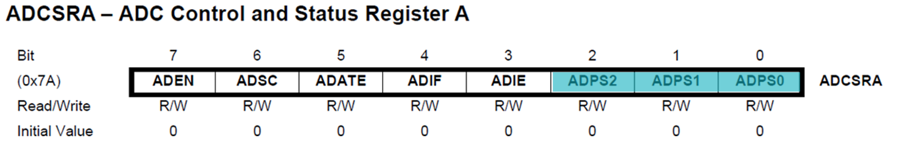
Bits 2-0 of ADCSRA determine the division factor between the system clock frequency and the input clock to the ADC. That is they set the sample rate for free-running mode. The prescaler settings are tabulated in Table 11.
ADPS2 |
ADPS1 |
ADPS0 |
Division Factor |
|---|---|---|---|
0 |
0 |
0 |
2 |
0 |
0 |
1 |
2 |
0 |
1 |
0 |
4 |
0 |
1 |
1 |
8 |
1 |
0 |
0 |
16 |
1 |
0 |
1 |
32 |
1 |
1 |
0 |
64 |
1 |
1 |
1 |
128 |
ADCSRB - ADC Control and Status Register B#
Bit 6 - ACME: Analogue comparator multiplexer enable#
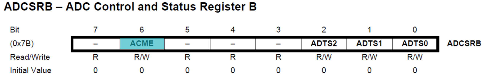
When logic 1 is written to bit 6 of ADCSRB the ADC is switched off, the ADC multiplexer selects the negative input to the Analog Comparator. When 0 is written to this bit, AIN1 is applied to the negative input of the Analog Comparator.
Note: The Analog Comparator compares the input values on the positive pin AIN0 and negative pin AIN1. When the voltage on the positive pin AIN0 is higher than the voltage on the negative pin AIN1, the Analog Comparator output, ACO, is set.
Bits 2:0 - ADT[2:0]: ADC Autotrigger source#
If logic 1 is written to the ADATE bit in the ADCSRA register, the value of the ADTS bits selects which source will trigger an ADC conversion. The trigger source settings are tabulated in Table 12.
ADTS2 |
ADTS1 |
ADTS0 |
TRigger Source |
|---|---|---|---|
0 |
0 |
0 |
Free Running Mode |
0 |
0 |
1 |
Analogue Comparitor |
0 |
1 |
0 |
External Interrupt Request 0 |
0 |
1 |
1 |
Timer/Counter 0 Compare Match A |
1 |
0 |
0 |
Timer/Counter 0 Overflow |
1 |
0 |
1 |
Timer/Counter 0 Compare Match B |
1 |
1 |
0 |
Timer/Counter 1 Overflow |
1 |
1 |
1 |
Timer/Counter 1 Capture Event |
ADCL and ADCH - The ADC Data Registers#
The ADC Data Registers are illustrated in Fig. 83.

Fig. 83 The ADC Data Registers ADCH and ADCL when (a) ADLAR = 0 and (b) when ADLAR = 1.#
When an ADC conversion is complete, the result is put in these two registers[8].
When ADCL is read, the ADC Data Register is not updated until ADCH is read.
If the result is left adjusted and no more than 8-bit precision is required, it is sufficient to read ADCH. Otherwise, ADCL must be read first, then ADCH.
DIDR0 - Digital Input Disable Register 0#
Bits 5:0 - ADC5D…ADC0D: ADC5…0 Digital Input Disable#
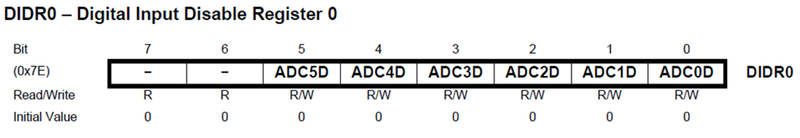
When logic 1 is written to one of these bits, the digital input buffer on the corresponding ADC pin is disabled. (i.e. the corresponding PIN register bit will always read zero).
When an analog signal is applied to the ADC5…0 pin and the digital input from this pin is not needed, logic 1 should be written to this bit to reduce power consumption in the digital input buffer.
Setting up the ADC#
The following steps are illustrated in flow-chart form in Fig. 84.
{kind=link}
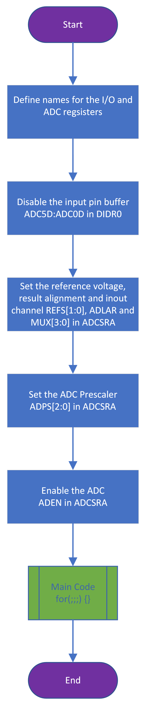
Fig. 84 A flow chart of the ADC initialization steps#
In words, the operations to be completed are:
Define convenient names for the required registers.
Set the data direction of the relevant pins to input (
DDRxn)Set the corresponding pin in the input disable register to 1 to disable the input buffer (
DIDR0)Select the reference voltage, result alignment and input channel (
ADMUX)Select the ADC prescaler value in the A control and status register (
ADCSRA)Write a 1 to the
ADENbit of the A control and status register to enable the ADC (ADCSRA)
The main code is illustrated in the flowchart shown in Fig. 85.
{kind=link}
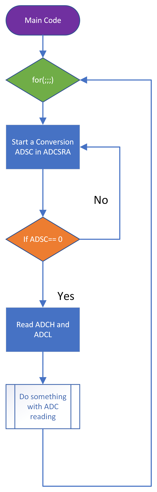
Fig. 85 A flow chart of the ADC operation loop#
In words, the operations to be completed are:
Within the infinite for loop, Write a 1 to the
ADSCbit of the A control and status register each time you want to start a conversion (`ADCSRA``)Monitor for the
ADSCbit going low (or theADIFbit going high) of the A control and status register.Read the converted value from the result registers (
ADCHandADCL).Do something with the ADC result.
We illustrate this in Analogue I/O Example program.
Analogue I/O Example program#

Single Conversion Example#
The centre tap of the blue potentiometer shown in Fig. 86 is connected to the analogue input A0 which represents Port C Bit 0 on the ATmega328 microcontroller.
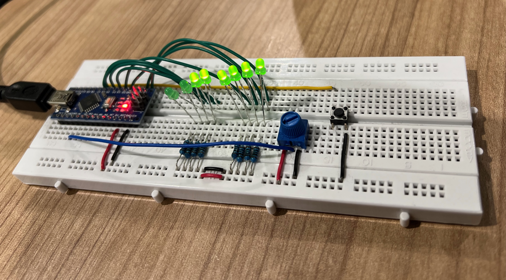
Fig. 86 The protyype board showing the finished Arduino nano application with ADC and digital outputs.#
As the voltage at the input changes, the value is reflected on the 6 LEDs
What does the code for this look like without using the predefined Arduino function – analogRead?
Example code - aligning port names to the I/O memory map#
We showed how we use the #define function to map our program variables to the I/O memory map shown in Example code - aligning port names to the I/O memory map. We use the same technique to map the digital and analogue registers to programmer friendly names:
//I/O and ADC Register definitions taken from datasheet
#define PORTB (*(volatile uint8_t *)(0x25))
#define DDRB (*(volatile uint8_t *)(0x24))
#define PINB (*(volatile uint8_t *)(0x23))
#define ADMUX (*(volatile uint8_t *)(0x7C))
#define ADCSRA (*(volatile uint8_t *)(0x7A))
#define ADCRSB (*(volatile uint8_t *)(0x7B))
#define ADCH (*(volatile uint8_t *)(0x79))
#define ADCL (*(volatile uint8_t *)(0x78))
#define DIDR0 (*(volatile uint8_t *)(0x7E))
We now define some unsigned integers as either 8 or 16 bits:
Variable type:
uint16_t
first variable name:
adc_result
second variable name:
previous_result
Initial value of
previous_result: `=0;”
The definitions are:
uint16_t adc_result, previous_result = 0;
uint8_t adc_result_low, adc_result_high;
Example - the main function#
We discussed this in Example Code - the main function.
Example - set up I/O using the registers#
// Set Data Direction Registers
DDRB = DDRB | 0b00111111; // Setup bits 0 - 5 of port B as outputs
// Turn all LEDs off
PORTB = PORTB & 0b11000000; // Pins B0 (D8) - B5 (D13) start low
// Set up ADC on pin A0
DIDR0 = DIDR0 | 0b00000001; //Disable pin A0 as a digital input
ADMUX = 0b01000000; // Select reference voltage, right adjusted result and select channel ADC0 - A0
ADCSRA = ADCSRA | 0b00000111; // Select ADC Prescaler
ADCSRA = ADCSRA | 0b10000000; // Enable ADC
Example - the processing loop#
for(;;)
{
ADCSRA = ADCSRA | 0b01000000; //start conversion by writing 1 to the ADSC bit
while((ADCSRA & 0b01000000) != 0) { } //wait until the ADSC bit changes to 0
adc_result_low = ADCL; //read the low byte of the result into adc_result_low
adc_result_high = ADCH; //read the high byte of the result into adc_result_high
/* shift whole 8 bits of ADC high byte into most significant byte of ADC result and
add in ADC low byte using bitwise OR. */
adc_result = (adc_result_high<<8) | adc_result_low;
// do somethinhg interesting with the ADC readings
}
Example - the full program#
The full program is available as a GitHub gist: main.c. You will need a fully featured IDE, such as Atmel (now Microchip) Studio, to compile and upload the code to the Ardino nano board.
Summary#
In this section we have:
discussed the differences between analogue and digital signals and the challenges in working with them.
explored analogue to digital conversion looking at the architectures and focusing on SAR based ADCs.
continued looking at I/O operations on the Atmel ATmega328 microcontroller focusing on analogue signals and using the ADC registers.
On Canvas#
This week on the canvas course pages, you will find the sample program from today’s lecture, look through this and ensure you are confident in how they work and how the masks are defined and registers set. There is also a short quiz to test your knowledge on these topics.